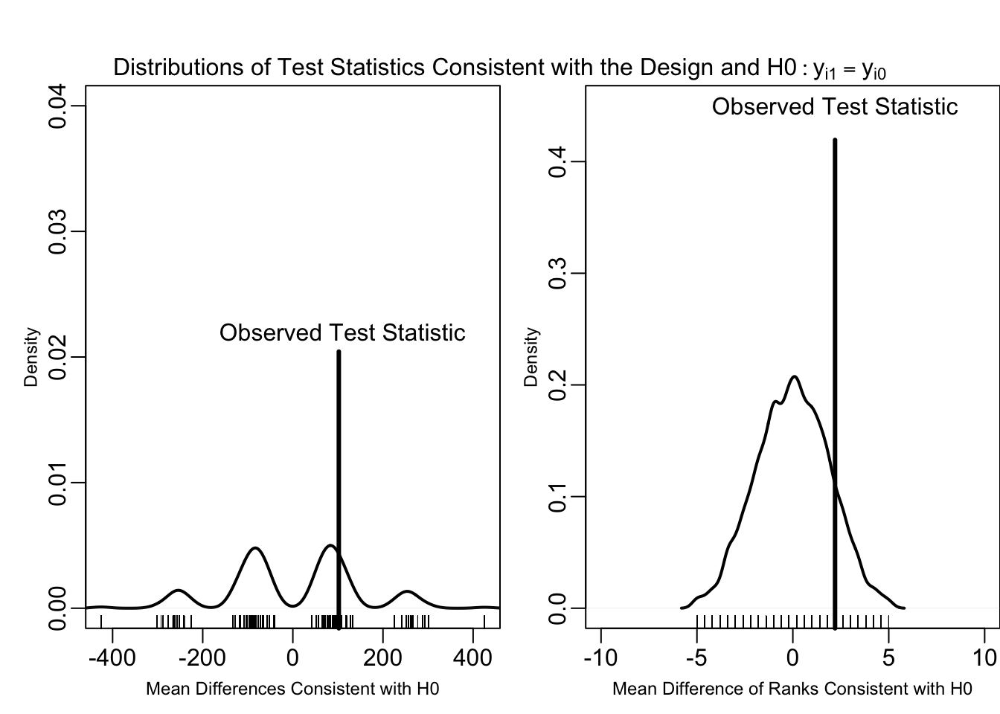
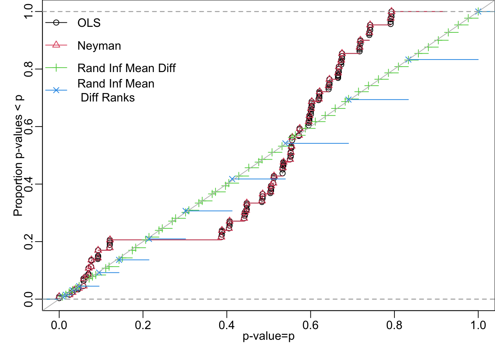

## First, create some data,
## y0 is potential outcome to control
N <- 10
y0 <- c(0, 0, 0, 0, 1, 1, 4, 5, 400, 500)
## Different individual level treatment effects
## tau <- c(1,3,2,10,1,2,3,5,1,1)*sd(y0)
set.seed(12345)
tau <- round(rnorm(N, mean = sd(y0), sd = 2 * (sd(y0)))) ## c(10,30,200,90,10,20,30,40,90,20)
tau <- tau * (tau > 0)
## y1 is potential outcome to treatment
y1 <- y0 + tau
# sd(y0)
# mean(y1)-mean(y0)
# mean(tau)
## Z is treatment assignment
set.seed(12345)
Z <- complete_ra(N)
## Y is observed outcomes
Y <- Z * y1 + (1 - Z) * y0
## The data
dat <- data.frame(Y = Y, Z = Z, y0 = y0, tau = tau, y1 = y1)
# (mean(y1) - mean(y0))/sd(y0)
# dat
# pvalue(oneway_test(Y~factor(Z),data=dat,distribution=exact(),alternative="less"))
# pvalue(wilcox_test(Y~factor(Z),data=dat,distribution=exact(),alternative="less"))
# pvalue(oneway_test(Y~factor(Z),data=dat,distribution=exact(),alternative="greater"))
# pvalue(wilcox_test(Y~factor(Z),data=dat,distribution=exact(),alternative="greater"))
## The mean difference test statistic
meanTZ <- function(ys, z) {
mean(ys[z == 1]) - mean(ys[z == 0])
}
## The difference of mean ranks test statistic
meanrankTZ <- function(ys, z) {
ranky <- rank(ys)
mean(ranky[z == 1]) - mean(ranky[z == 0])
}
observedMeanTZ <- meanTZ(ys = Y, z = Z)
observedMeanRankTZ <- meanrankTZ(ys = Y, z = Z)10 Things to Know About Hypothesis Testing
Hypothesis tests summarize information in research designs to help people reason about treatment effects
When researchers report that “The estimated average treatment effect is 5 (\(p=.02\)),” they are using a shorthand to say, “Dear reader, in case you were wondering whether we could distinguish signal from noise in the this experiment using averages, in fact, we can. The experimental results are not consistent with the idea that the treatment had no effects.” People do hypothesis tests in observational studies as well as in randomized experiments. This guide focuses on their use in randomized experiments or research designs that try to organize data so that they look “as-if-randomized” (such as regression discontinuity designs or other natural or quasi-experimental designs).
The \(p\)-value summarizes the ability of a given test to distinguish signal from noise. As we saw in 10 Things You Need to Know about Statistical Power, whether an experiment can detect a treatment effect depends not only on the size of the experimental pool, but also the distribution of the outcome1, the distribution of the treatment, and the substantive strength of the intervention itself. When a researcher calculates a \(p\)-value as the result of a hypothesis test, she is summarizing all of these aspects of a research design as they bear on a particular claim—usually a claim that the treatment had no causal effect.
The rest of this guide explains the pieces of a hypothesis test piece by piece: from null hypothesis (the claim that the treatment had no causal effect), to test-statistic summarizing the observed data (like a difference of means), to the creation of a probability distribution that allows calculation of a \(p\)-value. It also discusses the idea of rejecting (but not accepting) a hypothesis and touches on the question of what makes for a good hypothesis test (hint: an ideal hypothesis test should cast doubt on the truth rarely and distinguish even faint signals from noise). See also 10 Things You Need to Know about Randomization Inference for more discussion of these ideas.
In an experiment, a hypothesis is a claim about unobserved causal relationships
We do experiments to make interpretable causal comparisons (Kinder and Palfrey 1993), and we often estimate average causal effects. What does hypothesis testing have to do with causal inference? In this section we explain a bit about the distinction between assessing claims about causal effects versus making best guesses about causal effects.
A quick overview of the fundamental problem of causal inference and an introduction to some notation
Recall from Ten Things to Know about Causal Inference that the counterfactual conceptualization of causality uses the idea of potential outcomes to define cause and to formalize what we mean when we say “X causes Y” or “Smoking causes cancer” or “Information increases tax compliance.” Although there are other ways to think about causality (Brady (2008)), the counterfactual idea suggests that we imagine that each person, \(i\), would pay their taxes, \(y_{i}\), if given information about the use to which those taxes are put. Write \(Z_i=1\) to mean that information was giving to the person and \(Z_i=0\) if no information was given so that we can write \(y_{i,Z_i=1}\) to refer to the amount of taxes paid by someone given information and \(y_{i,Z_i=0}\) to refer to the amount of taxes paid by someone not given any information in particular. In an actual experiment, we might randomize the provision of information to citizens, so some people will have the information and others will not. We observe the taxes paid by people in both conditions but, for any one person, we can only observe the taxes that they pay in one of the two conditions. What does it mean when we say “causal effect”? It often means that the outcome in one condition (\(y_{i,Z_i=1}\) written slightly more simply as \(y_{i,1}\)) and the outcome in the other condition (\(y_{i,Z_i=0}\) or \(y_{i,0}\)) differ for a given person, such that we would write \(y_{i,Z_i=1} \ne y_{i,Z_i=0}\).
We cannot observe both \(y_{i,1}\) and \(y_{i,0}\) for each person — if we gave information about taxes to a person we observe \(y_{i,1}\) and so we cannot observe how they would have acted if they had not been given this information (\(y_{i,0}\)). So, we cannot use direct observation to learn about this counterfactual causal effect and we can only infer about it. Holland (1986) calls this inability to use direct observation to learn about counterfactual causality the “fundamental problem of causal inference.”
An overview of estimation based approaches to causal inference in randomized experiments.
There are three main ways that the statistical sciences have engaged with the fundamental problem of causal inference. All of these ways involve changing the target of inference. That is, when asked, “Does information cause people to pay their taxes?” we tend to say, “We cannot answer that question directly. However, we can answer a related question.”
The first approach changes the question from whether information causes a particular person to pay her taxes to whether information causes people to pay their taxes on average. Ten Types of Treatment Effect You Should Know About describes how a scientist can estimate average causal effects in a randomized experiment even though individual causal effects are unobservable. This insight is credited to Jerzy Neyman. Judea Pearl’s work on estimating the conditional probability distribution of an outcome based on a causal model of that outcome is similar to this idea. Both approaches address the fundamental problem of causal inference by changing the question to focus on averages or conditional probabilities rather than individuals.
A related approach that is due to Don Rubin involves predicting the individual level potential outcomes. The predictions are based on a probability model of treatment assignment \(Z_i\) (for example, \(Z \sim \text{Bernoulli}(\pi)\)) and a probability model of the two potential outcomes (for example, \((y_{i,1},y_{i,0}) \sim \text{Multivariate Normal}(\boldsymbol{\beta}\mathbf{X}, \boldsymbol{\Sigma})\) with a vector of coefficients \(\boldsymbol{\beta}\), an \(n \times p\) matrix of variables \(\mathbf{X}\) (containing both treatment assignment and other background information) and a \(p \times p\) variance-covariance matrix \(\Sigma\) describing how all of the columns in \(\mathbf{X}\) relate to one another). The probability models relate treatment, background information, and outcomes to one another. The approach combines these models with data using Bayes’ Rule to produce posterior distributions for quantities like the individual level treatment effects or average treatment effects (see (Imbens and Rubin 2007) for more on what they call the Bayesian Predictive approach to causal inference). So, this predictive approach focuses not on averages but on differences in predicted potential outcomes for each person (although mostly these individual predicted differences are summarized using characteristics of the posterior distributions, like the average of the predictions.)
Hypothesis testing is a statistical approach to the fundamental problem of causal inference using claims about the unobserved.
The third approach to this problem changes the question again. Fisher (1935, chap. 2) taught us that we can ask the fundamental question about whether there is a causal effect for a single person, but the answer can only be in terms of how much information the research design and data provide about the question. That is, one can hypothesize that, for person \(i\), the information made no difference to their outcomes, such that \(y_{i,1}=y_{i,0}\) or \(y_{i,1}=y_{i,0}+\tau_i\) where \(\tau_i=0\) for everyone. However, the answer to this question has to be something like “This research design and dataset provide a lot of information about this model or idea or hypothesis.” or, as above, “This research design is not consistent with that claim.” (See Paul R. Rosenbaum (2002)(Chapter 2), Paul R. Rosenbaum (2010)(chapter 2), and Paul R. Rosenbaum (2017), for more details about this approach.)
The Null Hypothesis of No Effects is a precise statement about potential outcomes
Even if we cannot use direct observation to learn about counterfactual causal effects, we can still ask questions about them, or make theoretical models that relate some intervention or treatment, background characteristics, and potential outcomes. The simplest such model states that the outcome under treatment would be the same as the outcome under control for all units; that is, it would say that regardless of background characteristics, or information given in the experimental treatment condition, each person would pay the same amount in taxes: \(y_{i,1}=y_{i,0}\) for all units \(i\). To emphasize the tentative and theoretical nature of this model, people have called this a hypothesis, often write it as “the sharp null hypothesis.” and use the following shorthand: \(H_0: y_{i,1}-y{i,0}=\tau_i\) where \(\tau_i=0\) for all units \(i\).
Side Note: Notice that thinking about sharp hypotheses makes us realize that we could make other models relating \(y_{i,1}\) and \(y_{i,0}\) in which the potential outcomes relate in ways that are not additive or linear, and where the effect need not be zero or even the same for all units: for example, we could hypothesize that \(\tau_i=\{5,0,-2\}\) 5 for unit 1, 0 for unit 2, and -2 for unit 3 in a 3 unit experiment. Notice also that writing potential outcomes this way, with the potential outcome for unit \(i\) only referring to \(i\) and not some other units (\(y_{i,Z_i}\)), is part of the model. That is, the particular model of \(H_0: y_{i,1}=y_{i,0}\) implies that the treatment has no effect on anyone — and no effects includes no spillover effects. We could be a little more specific by writing the potential outcomes like so: The potential outcome of unit \(i\) when it is assigned to treatment, and when all of the other units are assigned to any other set of treatments \(\mathbf{Z}_{~i}=\{Z_j,Z_k,\ldots \}\) can be written \(y_{i,Z_i=1,\mathbf{Z}_{~i}}\). See Bowers, Fredrickson, and Panagopoulos (2013) and Bowers et al. (2018) for more on the idea that a hypothesis is a theoretical model that can be tested with data in the context of hypotheses about the propagation of treatment effects across a network.
The weak null hypothesis of no effects is a statement about aggregated potential outcomes
An experiment may influence some units but, on average, have no effects. To codify this intuition, researchers can write a null hypothesis about an average of potential outcomes, or some other aggregated summary of the potential outcomes, rather than about the whole collection of potential outcomes.
Because most current discussions about causal effects talks about the average of the effects, people write the weak null something like \(H_0: \bar{\tau}=0\) where \(\bar{\tau}=(1/N)\sum_{i=1}^N \tau_i\). Again, the hypothesis is a statement or model of a relationship among only partially observed potential outcomes. But, here it is about the average of them. One could, in principle, articulate hypotheses about other aggregates: medians, percentiles, ratios, trimmed means, etc. However hypothesizing about average effects simplifies the math and statistics: we know the properties of averages of independent observations as sample sizes increase, so that we can appeal to a Central Limit Theorem to describe the distribution of averages in large samples—and this, in turn, makes calculating \(p\)-values quick and easy in large samples.
Randomization allows us to use what we observe to test hypotheses about what we do not observe.
Whether one hypothesizes about unit-level effects directly or about averages of them, we still must confront the problem of distinguishing signal from noise. A hypothesis only refers to potential outcomes. Above, assuming no interaction between units, we imagined two potential outcomes per person, but we only observe one per person. How can we use what we observe to learn about theoretical models of partially observed quantities? In this simple experiment, we know that we observe one of the two potential outcomes per person, depending on which treatment was assigned to that person. So, we can link the unobserved counterfactual outcomes to an observed outcome (\(Y_i\)) using treatment assignment (\(Z_i\)) like so:
\[\begin{equation} Y_i = Z_i y_{i,1} + (1 - Z_i) y_{i,0} (\#eq:identity) \end{equation}\]
@ref(eq:identity) says that our observed outcome, \(Y_i\) (here, amount of taxes paid by person \(i\)), is \(y_{i,1}\) when the person is assigned to the treatment group (\(Z_i=1\)), and \(y_{i,0}\) when the person is assigned to the control group.
How much information does our research design and dataset contain about the hypothesis? Imagine, for now, the hypothesis that treatment adds 5 to the tax payments of every single person such that \(H_0: y_{i,1} = y_{i,0} + \tau_i\) where \(\tau_i=5\) for all \(i\).
Let us entertain this model for the sake of argument. What would this hypothesis imply for what we observe? We have the equation relating observed to unobserved in @ref(eq:identity) so, this model or hypothesis would imply that:
\[ \begin{aligned} Y_i & = Z_i ( y_{i,0} + \tau_i ) + ( 1 - Z_i) y_{i,0} \\ & = Z_i y_{i,0} + Z_i \tau_i + y_{i,0} - Z_i y_{i,0} \\ & = Z_i \tau_i + y_{i,0} \end{aligned} \]
What we observe, \(Y_i\), would be either \(y_{i,0}\) in the control condition, \(Z_i=0\) or \(\tau_i + y_{i,0}\) (which would be \(5 + y_{i,0}\) in the treatment condition).
This hypothesis further implies that \(y_{i,0} = Y_i - Z_i \tau_i\) or \(y_{i,0} = Y_i - Z_i 5\). If we subtracted 5 from each observed response in the treatment condition, then our hypothesis implies that we would observe \(y_{i,0}\) for everyone. That is, by subtracting 5, we would make the control and the treatment group equivalent in observed outcomes. This logic gives us an observable implication of the hypothesis.
The sharp null hypothesis of no effects specifies that \(\tau_i=0\) for all \(i\). And this in turn implies that \(y_{i,0} = Y_i - Z_i \tau_i = Y_i\). That is, it implies that what we observe, \(Y_i\), is what we would observe if every unit were assigned to the control condition. And the implication then, is that we should see no differences between the treated and control groups in their observable outcomes.
The weak null hypothesis of no effects specifies that \(\bar{\tau}=\bar{y}_{1} - \bar{y}_0 = 0\), and we can write a similar identity linking means of unobserved potential outcomes to means of observed outcomes in different treatment conditions.
Test statistics summarize the relationship between observed outcomes and treatment assignment.
Given a hypothesis and a mapping from unobserved to observed outcomes, the next ingredient in a hypothesis test is a test statistic. A test statistic summarizes the relationship between treatment and observed outcomes using a single number. In general, we would like our test statistics to take on larger values the larger the treatment effect. The code below, for example, shows are two such test statistics using an example experiment with 10 units randomized into two groups (you can press the “CODE” button to see the R code).
The first test statistic is the mean difference (meanTZ) and returns an observed value of 102 and the second is the mean difference of the rank-transformed outcomes (meanrankTZ), which returns a value of 2.2. One could also use versions of these test statistics standardized by their estimated standard error (see Chung, Romano, et al. (2013) for an argument in favor of this test statistic). To test the sharp null hypothesis of no effects, one may choose almost any test statistic such that the values of that function increase as the difference between treated and control outcomes increase (see (rosenbaum:2002?), Chapter 2, for a discussion of “effect increasing” test statistics).
Test of the weak null of no effects use the differences of means (perhaps standardized or studentized) as the test statistic.
\(p\)-values encode how much information a research design and test statistic tell us about the hypothesis. Hypothesis tests require distributions of the test statistic under the hypothesis.
Given a claim about the possible results of the experiment (i.e. an hypothesis) and a way to summarize the observed data as it bears on the hypothesis (i.e. a test statistic that should get bigger as the results diverge from the hypothesis as explained above), we now want to move beyond description of the observed data to learn how much natural variability we would expect to see in the test statistic given the research design entertaining the hypothesis (to get us back to the question of signal and noise).
How much evidence we have about a hypothesis depends on the design of the study. A large experiment, for example, should have more information about a hypothesis than a small one. So, what do we mean by evidence against the hypothesis? How would we formalize or summarize this evidence so that larger experiments tend to reveal more and small experiments tend to reveal less information?
One answer to this question is to refer to the thought experiment of repeating the study. Imagine, for the sake of argument, that the hypothesis was correct. If we repeated the study and calculated the test statistic we would receive a number — this number would reflect the outcome of the experiment under the hypothesis. Now, imagine repeating the hypothetical experiment many times, recalculating the test statistic each time. The distribution of the test statistics would then tell us all of the test statistics that could have occurred if the null hypothesis were true. If the test statistic is a sum or mean, then in a large experiment, we know that the distribution of those numbers will be more closely concentrated around the focal hypothesized value (say, \(t(Z,y_0)\)) than in a small experiment.
When we compare what we actually observe, \(t(z,Y)\), to the distribution of what we could have observed under the null, we learn that our given study is typical or not typical of the null hypothesis. And we encode this typicality or extremity with a \(p\)-value.
Notice that the \(p\)-value does not tell us about the probability associated with the observed data. The observed data is observed. The probability arises from the hypothetical, but possible, repetition of the experiment itself, the test statistic, and the hypothesis. The one-tailed \(p\)-value is the probability of seeing a value of our test statistic as great or greater than we actually observed considering, for the sake of argument, a given hypothesis.
An example: Testing the Sharp Null Hypothesis of No Effects
Let us test the sharp null hypothesis of no effects. In the case of the example experiment, the treatment was assigned to exactly 5 observations out of 10 completely at random. To repeat that operation, we need only permute or shuffle the given \(Z\) vector (you can see the Code by clicking on the “Code” button).
repeatExperiment <- function(Z) {
sample(Z)
}We already know that \(H_0: y_{i,1} = y_{i,0}\) implies that \(Y_i=y_{i,0}\). So, we can describe all of the ways that the experiment would work out under this null by simply repeating the experiment (i.e. re-assigning treatment) and recalculating a test statistic each time. The following code repeatedly re-assigns treatment following the design and calculates the test statistic each time.
set.seed(123457)
possibleMeanDiffsH0 <- replicate(10000, meanTZ(ys = Y, z = repeatExperiment(Z = Z)))
set.seed(123457)
possibleMeanRankDiffsH0 <- replicate(10000, meanrankTZ(ys = Y, z = repeatExperiment(Z = Z)))And these plots show the distributions of the two different test statistics that would emerge from the world of the null hypothesis (the curves and short ticks at the bottom of the plots). The plots also show the observed values for the test statistics that we can use to compare what we observe (the long thick lines) with what we hypothesize (the distributions).
pMeanTZ <- min(
mean(possibleMeanDiffsH0 >= observedMeanTZ),
mean(possibleMeanDiffsH0 >= observedMeanTZ)
)
pMeanRankTZ <- min(
mean(possibleMeanRankDiffsH0 >= observedMeanRankTZ),
mean(possibleMeanRankDiffsH0 <= observedMeanRankTZ)
)
pMeanTZ
pMeanRankTZpar(mfrow = c(1, 2), mgp = c(1.5, .5, 0), mar = c(3, 3, 0, 0), oma = c(0, 0, 3, 0))
plot(density(possibleMeanDiffsH0),
ylim = c(0, .04),
xlim = range(possibleMeanDiffsH0),
lwd = 2,
main = "", # Mean Difference Test Statistic",
xlab = "Mean Differences Consistent with H0", cex.lab = 0.75
)
rug(possibleMeanDiffsH0)
rug(observedMeanTZ, lwd = 3, ticksize = .51)
text(observedMeanTZ + 8, .022, "Observed Test Statistic")
plot(density(possibleMeanRankDiffsH0),
lwd = 2,
ylim = c(0, .45),
xlim = c(-10, 10), # range(possibleMeanDiffsH0),
main = "", # Mean Difference of Ranks Test Statistic",
xlab = "Mean Difference of Ranks Consistent with H0", cex.lab = 0.75
)
rug(possibleMeanRankDiffsH0)
rug(observedMeanRankTZ, lwd = 3, ticksize = .9)
text(observedMeanRankTZ, .45, "Observed Test Statistic")
mtext(side = 3, outer = TRUE, text = expression(paste("Distributions of Test Statistics Consistent with the Design and ", H0:y[i1] == y[i0])))
To formalize the comparison between observed and hypothesized, we can calculate a \(p\)-value, i.e., the proportion of the hypothetical experiments that yield test statistics greater than or equal to the observed experiment. In the left panel of the figure we see that a wide range of differences of means between treated and control groups are compatible with the treatment having no effects (with the overall range between -425.6 and 425.6). The right panel shows that transforming the outcomes to ranks before taking the difference of means reduces the range of the test statistics — after all the ranks themselves go from 1 to 10 rather than from 1 to 280.
One-sided \(p\)-values
One-sided \(p\)-values capture the probability that a test statistic is at least as big or bigger (upper \(p\)-value) or at least as smaller or smaller (lower \(p\)-value) than the observed test statistic. Here, the one-sided \(p\)-values are 0.2034 for the simple mean difference and 0.15 for the mean difference of the rank-transformed outcomes. Each test statistic casts a different amount of doubt, or quantifies a different amount of surprise, about the same null hypothesis of no effects. The outcome itself is so noisy that the mean difference of the rank-transformed outcomes does a better job of picking up the signal than the simple mean difference. These data were generated with treatment effects built in, so the null hypothesis of no effects is false, but the information about the effects is noisy — the sample size is small, and the distribution of the outcomes involves some strange outlying points and treatment effects themselves vary greatly.
Two-sided \(p\)-values
Say we did not know in advance whether our experiment would show a negative effect or a positive effect. Then we might make two hypothesis tests — one calculating the one-sided upper \(p\)-value and the other calculating the one-sided lower \(p\)-value. Now, if we did this we would be calculating two \(p\)-values and, if we made a standard practice of this, we would run the risk of misleading ourselves. After all, recall from the 10 things about multiple comparisons that even if there really is no effect, 100 independent and well operating tests of the null of no effects will yield no more than 5 \(p\)-values less than .05. One easy solution to the challenge of summarizing extremity of a experiment in either direction rather than just focusing on greater-than or less-than is to calculate a two-sided \(p\)-value. This, by the way, is the standard \(p\)-value produced by most canned software such as lm() and t.test() and wilcox.test() in R. The basic idea is to calculate both \(p\)-values and then multiply the smaller \(p\)-value by 2. (The idea here is that you are penalizing yourself for making two tests – see P. R. Rosenbaum (2010), Chap 2 and Cox et al. (1977) for more on the idea of multiplying the smaller p-value by two.)
## Here I use <= and >= rather than < and > because of the discreteness of the
## randomization distribution with only 10 observations. See discussions of
## the "mid-p-value"
p2SidedMeanTZ <- 2 * min(
mean(possibleMeanDiffsH0 >= observedMeanTZ),
mean(possibleMeanDiffsH0 <= observedMeanTZ)
)
p2SidedMeanRankTZ <- 2 * min(
mean(possibleMeanRankDiffsH0 >= observedMeanRankTZ),
mean(possibleMeanRankDiffsH0 <= observedMeanRankTZ)
)In this case the two-sided \(p\)-values are 0.4068 and 0.296 for the simple mean differences and means differences of ranks respectively. We interpret them in terms of “extremity” — we would only see an observed mean difference as far away from zero as the one manifest in our results roughly 18% of the time, for example.
As a side note: The test of the sharp null shown here can be done without writing the code yourself. The code that you’ll see here (by clicking the code buttons) shows how to use different R packages to test hypotheses using randomization-based inference.
## using the coin package
library(coin)
set.seed(12345)
pMean2 <- pvalue(oneway_test(Y ~ factor(Z), data = dat, distribution = approximate(nresample = 1000)))
dat$rankY <- rank(dat$Y)
pMeanRank2 <- pvalue(oneway_test(rankY ~ factor(Z), data = dat, distribution = approximate(nresample = 1000)))
pMean2[1] 0.405
99 percent confidence interval:
0.3650502 0.4458670 pMeanRank2[1] 0.28
99 percent confidence interval:
0.2440542 0.3180731 ## using a development version of the RItools package
library(devtools)
dir.create(here("R-dev"))
dev_mode(on = TRUE, path = here("R-dev"))
renv::install("dgof")Installing dgof [1.4] ...
OK [copied cache]renv::install("hexbin")Installing hexbin [1.28.2] ...
OK [copied cache]renv::install("kSamples")Installing kSamples [1.2-9] ...
OK [copied cache]renv::install("ddst")Installing ddst [1.4] ...
OK [copied cache]remotes::install_github("markmfredrickson/RItools@randomization-distribution", dependencies = TRUE)
library(RItools)
thedesignA <- simpleRandomSampler(total = N, z = dat$Z, b = rep(1, N))
pMean4 <- RItest(
y = dat$Y, z = dat$Z, samples = 1000, test.stat = meanTZ,
sampler = thedesignA
)
pMeanRank4 <- RItest(
y = dat$Y, z = dat$Z, samples = 1000, test.stat = meanrankTZ,
sampler = thedesignA
)
pMean4Call: RItest(y = dat$Y, z = dat$Z, test.stat = meanTZ, sampler = thedesignA,
samples = 1000)
Value Pr(>x)
Observed Test Statistic 102 0.2024pMeanRank4Call: RItest(y = dat$Y, z = dat$Z, test.stat = meanrankTZ, sampler = thedesignA,
samples = 1000)
Value Pr(>x)
Observed Test Statistic 2.2 0.1508dev_mode(on = FALSE, path = here("R-dev"))using the ri2 package
library(ri2)
thedesign <- declare_ra(N = N)
pMean4 <- conduct_ri(Y ~ Z,
declaration = thedesign,
sharp_hypothesis = 0, data = dat, sims = 1000
)
summary(pMean4) term estimate two_tailed_p_value
1 Z 102 0.4047619pMeanRank4 <- conduct_ri(rankY ~ Z,
declaration = thedesign,
sharp_hypothesis = 0, data = dat, sims = 1000
)
summary(pMeanRank4) term estimate two_tailed_p_value
1 Z 2.2 0.3015873An example: Testing the weak null of no average effects
The weak null hypothesis is a claim about aggregates, and is nearly always stated in terms of averages: \(H_0: \bar{y}_{1} = \bar{y}_{0}\) The test statistic for this hypothesis nearly always is the difference of means (i.e. meanTZ() above. The below code shows the use of least squares (lm() in R) for the purpose of calculating differences of means as a test statistic for hypotheses about average effects. Notice that the OLS-based \(p\)-values differ from those calculated by t.test() and difference_of_means(). Recall that the OLS statistical inference is justified by the assumption of independent and identically distributed observations yet, in most experiments, the treatment itself changes the variation in the treatment group (thereby violating the identical-distribution/homoskedasticity assumption of OLS). This is one of a few reasons why best practice in testing the weak null hypothesis of no average treatment effects uses tools other than those provided by simple canned OLS procedures.
lm1 <- lm(Y ~ Z, data = dat)
lm1P <- summary(lm1)$coef["Z", "Pr(>|t|)"]
ttestP1 <- t.test(Y ~ Z, data = dat)$p.value
library(estimatr)
ttestP2 <- difference_in_means(Y ~ Z, data = dat)
c(
lmPvalue = lm1P,
ttestPvalue = ttestP1,
diffOfMeansPvalue = ttestP2$p.value
) lmPvalue ttestPvalue diffOfMeansPvalue.Z
0.5106994 0.5110166 0.5110166 This code produces the same results without using least squares — after all, we are just calculating differences of means and the variances of those means as they might vary across repeated experiments in the same pool of experimental units.
varEstATE <- function(Y, Z) {
var(Y[Z == 1]) / sum(Z) + var(Y[Z == 0]) / sum(1 - Z)
}
seEstATE <- sqrt(varEstATE(dat$Y, dat$Z))
obsTStat <- observedMeanTZ / seEstATE
c(
observedTestStat = observedMeanTZ, stderror = seEstATE, tstat = obsTStat,
pval = 2 * min(
pt(obsTStat, df = 8, lower.tail = TRUE),
pt(obsTStat, df = 8, lower.tail = FALSE)
)
)observedTestStat stderror tstat pval
102.0000000 148.1816453 0.6883444 0.5106994 Notice that these tests all assume that the distribution of the test statistic across repeated experiments would be well characterized by a \(t\)-distribution. The left-hand panel in the figure above shows the realized distribution of one way for the weak null to be true (i.e. if the sharp null is true): there are many ways for the weak null to be true — some of which are compatible with large positive effects on some units and large negative effects on other units, others are compatible with other patterns of individual level effects. In this particular small data set, engineered to have a very skewed outcome distribution, however, none of those patterns will produce a reference distribution that look like a Normal or \(t\)-curve if the mean difference is used as a test statistic. We will return to this point later when we discuss the characteristics of a good test — one of which is a controlled false positive rate.
In simple hypothesis tests, we do not accept null hypotheses.
Sometimes people want to make a decision using the \(p\)-value. Remember that a \(p\)-value uses a test statistic and the idea of repeating the experiment to quantifies information from the research design about a hypothesis. It is the design, test statistic function and hypothesis which generates a probability distribution. And it is the actual data, design, and test statistic function that creates a single observed value.
The \(p\)-value just tells us how extreme the observed result is from the perspective of the hypothesis. Or, we can think of the \(p\)-value as encoding the inconsistency between our observed data and the hypothesis. What if we want to make a decision? It turns out that we can make decisions using a \(p\)-value if we are willing to accept a certain amount of error. Say, for example, we see a one-tailed \(p=.01\): this would mean that in only 1 in 100 hypothetical experiments representing the null hypothesis would we see a result as large or larger than our actual result. We might be tempted to say, that our observed result is so strange that we want to act as if the null were false. This would be ok—after all a \(p\)-value alone cannot control the behavior of an adult human—but the human has to know that in 1/100 cases where the null is true, we would still see this result on this same subject pool with this same experimental design. That is, if we used a small \(p\)-value to reject the null, or acted as if the null were false we could still be making an error. These incorrect rejections are sometimes called false positive errors because the null hypothesis is so often zero and the desired effect (say, in medical trials) is so often coded as positive.
Say we were happy to make 1 false positive error or false rejection in every 20 experiments. In that case, we should also be happy to reject a null hypothesis if we saw a \(p \le 1/20\) or \(p \le .05\). And we would call \(p\)-values smaller than .05 signals of inconsistency with the null hypothesis and thus should only lead us to err in 5% of experiments like the one that we are analyzing.
What does it mean to reject a null hypothesis?
Notice that a \(p=.01\) only reflects extremity of the observed data compared with the hypothesis — it means that the observed test statistic looks extreme when considered from the perspective of the distribution of tests statistics that are generated from the null hypothesis and research design. So, we think of \(p=.01\) (and other small \(p\)-values) as casting doubt on whether the specific hypothesis is a good model of the observed data. Often the only model of potential outcomes that is tested is the model of no effects, so a small \(p\)-value should make us doubt the model of no effects. The makers of canned regression software tend to print out a \(p\)-value that refers to this hypothesis automatically, so that it is difficult to not see the results of this test even if you just want to describe differences of means in the data but you are using least squares as your difference of means calculator.
What does it mean to not reject a null hypothesis?
Notice that a \(p=.50\) only reflects extremity of the observed data compared with the hypothesis—but the observed data, in this case, do not look extreme but common from the perspective of the null hypothesis. So, \(p=.5\) (and other large p-values) do not encourage us to doubt the model of the null hypothesis. It does not encourage us to accept that model—it is only a model after all. We do not know how reasonable the model was a priori, for example. So, a single large \(p\)-value is some argument in favor of the null, but not a very clear argument.
Once you are using \(p\)-values to reject a hypothesis, you will make errors
A good test rarely rejects true hypotheses (i.e. has a controlled false positive error rate) and easily detects signal from noise (i.e. has good statistical power, it rarely makes the error of missing the signal in the noise).
How to learn about errors of missing the signal in the noise?
The 10 Things you need to know about statistical power guide explains how we want hypotheses to reject false nulls (i.e. detect signal from noise). When we think about the power of statistical tests, we need to consider the alternative hypothesis. However, as we have shown above, we can test null hypotheses without the idea of rejecting or accepting them although then the “power” of a test is harder to define and work with.
How to learn about false positive errors?
The easiest way to learn about false positive errors is by simulation. First, we create the situation where the null is true and known, and then we test that null under the many ways that it is possible for that null to be true. For example, in the example experiment used here, we have 5 units assigned to treatment out of 10. This means that there are \(\binom{10}{5}=252\) different ways to assign treatment — and 252 ways for the experiment to have had no effects on the individuals.
We demonstrate here setting the sharp or strict null hypothesis to be zero, but one could also assess the false positive rate for different hypotheses. We compare error rates for a few of the approaches used so far, including the test of the weak null of no effects. The following plot shows the proportion of \(p\)-values less than any given level of significance (i.e. rejection threshold) for each of four tests. That is, this is a plot of false positive rates for any given significance threshold. A test that has a controlled or known false positive rate would have symbols on or below the line across the whole x-axis or range of the plot. As we can see here, the two tests using permutations of treatment to assess the sharp null of no effects have this feature. The tests of the weak null using the mean difference test statistic and appealing to the large sample theory to justify the use of a \(t\)-distribution do not have a controlled false positive rate: the proportion of \(p\)-values below any given rejection threshold can be too high or too low.
collectPValues <- function(y, z) {
## Make Y and Z have no relationship by re-randomizing Z
newz <- repeatExperiment(z)
thelm <- lm(y ~ newz, data = dat)
ttestP2 <- difference_in_means(y ~ newz, data = dat)
owP <- pvalue(oneway_test(y ~ factor(newz), distribution = exact()))
ranky <- rank(y)
owRankP <- pvalue(oneway_test(ranky ~ factor(newz), distribution = exact()))
return(c(
lmp = summary(thelm)$coef["newz", "Pr(>|t|)"],
neyp = ttestP2$p.value[[1]],
rtp = owP,
rtpRank = owRankP
))
}set.seed(12345)
pDist <- replicate(5000, collectPValues(y = dat$Y, z = dat$Z))par(mfrow = c(1, 1), mgp = c(1.25, .5, 0), oma = rep(0, 4), mar = c(3, 3, 0, 0))
plot(c(0, 1), c(0, 1),
type = "n",
xlab = "p-value=p", ylab = "Proportion p-values < p"
)
for (i in 1:nrow(pDist)) {
lines(ecdf(pDist[i, ]), pch = i, col = i)
}
abline(0, 1, col = "gray")
legend("topleft",
legend = c("OLS", "Neyman", "Rand Inf Mean Diff", "Rand Inf Mean \n Diff Ranks"),
pch = 1:5, col = 1:5, lty = 1, bty = "n"
)
In this particular case, at the threshold of \(\alpha=.05\), all of the tests except for the rank based test report less than a 5% false positive rate – this is good, it should be 5% or less. However, this is no guarantee of good performance by the large-sample based tests in other small experiments, or experiments with highly skewed outcomes, etc… When in doubt it is easy to assess the false positive rate of a test by using the code in this guide to make your own simulation.
apply(pDist, 1, function(x) {
mean(x < .05)
}) lmp neyp rtp rtpRank
0.0378 0.0378 0.0456 0.0450 What else to know about hypothesis tests.
Here we list a few other important but advanced topics connected to hypothesis testing:
- Even if a given testing procedure controls the false positive rate for a single test, it may not control the rate for a group of multiple tests. See 10 Things you need to know about multiple comparisons for a guide to the approaches to controlling such rejection-rates in multiple tests.
- A \(100\alpha\)% confidence interval can be defined as the range of hypotheses where all of the \(p\)-values are greater than or equal to \(\alpha\). This is called inverting the hypothesis test. (P. R. Rosenbaum (2010)). That is, a confidence interval is a collection of hypothesis tests. This means that criticisms of \(p\)-values are also criticisms of confidence intervals.
- A point estimate based on hypothesis testing is called a Hodges-Lehmann point estimate. (Paul R. Rosenbaum (1993),Hodges and Lehmann (1963))
- A set of hypothesis tests can be combined into one single hypothesis test. For example, you can test the hypothesis of an effect of size 1 on outcome 1, an effect of size 0 on outcome 2 and an effect of -10 on outcome 3. (Hansen and Bowers (2008),Caughey, Dafoe, and Seawright (2017))
- In equivalence testing, one can hypothesize that two test-statistics are equivalent (i.e. the treatment group is the same as the control group) rather than only about one test-statistic (the difference between the two groups is zero) {Hartman and Hidalgo (2018)}
- Since a hypothesis test is a model of potential outcomes, one can use hypothesis testing to learn about complex models, such as models of spillover and propagation of treatment effects across networks (Bowers, Fredrickson, and Panagopoulos (2013), Bowers, Fredrickson, and Aronow (2016), Bowers et al. (2018))
References
Bowers, Jake, Bruce A Desmarais, Mark Frederickson, Nahomi Ichino, Hsuan-Wei Lee, and Simi Wang. 2018. “Models, Methods and Network Topology: Experimental Design for the Study of Interference.” Social Networks 54: 196–208.
Bowers, Jake, Mark M Fredrickson, and Costas Panagopoulos. 2013. “Reasoning about Interference Between Units: A General Framework.” Political Analysis 21 (1): 97–124.
Bowers, Jake, Mark Fredrickson, and Peter M Aronow. 2016. “Research Note: A More Powerful Test Statistic for Reasoning about Interference Between Units.” Political Analysis 24 (3): 395–403.
Brady, Henry E. 2008. “Causation and Explanation in Social Science.” In The Oxford Handbook of Political Methodology (Oxford Handbooks of Political Science).
Caughey, Devin, Allan Dafoe, and Jason Seawright. 2017. “Nonparametric Combination (NPC): A Framework for Testing Elaborate Theories.” The Journal of Politics 79 (2): 688–701.
Chung, EunYi, Joseph P Romano, et al. 2013. “Exact and Asymptotically Robust Permutation Tests.” The Annals of Statistics 41 (2): 484–507.
Cox, DR, W. R. van Zwet, JF Bithell, O. Barndorff-Nielsen, and M. Keuls. 1977. “The Role of Significance Tests [with Discussion and Reply].” Scandinavian Journal of Statistics 4 (2): 49–70.
Fisher, R. A. 1935. The design of experiments. 1935. Oliver & Boyd Edinburgh, Scotland. Edinburgh: Oliver; Boyd.
Hansen, Ben B., and Jake Bowers. 2008. “Covariate Balance in Simple, Stratified and Clustered Comparative Studies.” Statistical Science 23 (2): 219–36.
Hartman, Erin, and F Daniel Hidalgo. 2018. “An Equivalence Approach to Balance and Placebo Tests.” American Journal of Political Science 62 (4): 1000–1013.
Hodges, J. L., and E. L. Lehmann. 1963. “Estimates of location based on rank tests.” Ann. Math. Statist 34: 598–611.
Holland, Paul W. 1986. “Statistics and causal inference.” Journal of the American Statistical Association 81 (396): 945–60.
Imbens, G., and D. Rubin. 2007. “Causal Inference: Statistical Methods for Estimating Causal Effects in Biomedical, Social, and Behavioral Sciences.” Cambridge University Press, forthcoming.
Kinder, D. R., and T. R. Palfrey. 1993. “On Behalf of an Experimental Political Science.” Experimental Foundations of Political Science, 1–39.
Rosenbaum, P R. 2010. “Design of observational studies.” Springer Series in Statistics.
Rosenbaum, Paul R. 2002. “Attributing Effects to Treatment in Matched Observational Studies.”
———. 2017. Observation and Experiment: An Introduction to Causal Inference. Harvard University Press.
Rosenbaum, Paul R. 1993. “Hodges-Lehmann Point Estimates of Treatment Effect in Observational Studies.” Journal of the American Statistical Association 88 (424): 1250–53.
———. 2010. “Design Sensitivity and Efficiency in Observational Studies.”
Footnotes
Outcomes with big outliers add noise, outcomes that are mostly 0 have little signal, blocking or pre-stratification or covariance adjustment can reduce noise.↩︎